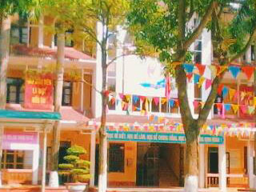
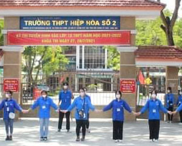
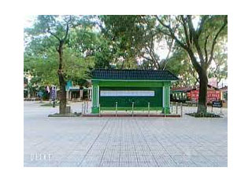

TIN TỨC SƠ KẾT HỌC KÌ I, 2021- 2022 Một nửa chặng đường của năm học 2021- 2022 đã khép lại.Cứ mỗi độ thu về Hà Nội lại nồng nàn hương cốm. Từ lâu, cốm là loại quà đặc trưng của Hà Nội và được đông đảo người dân thủ đô yêu thích. Chính vì vậy, cốm mang trong mình hương vị riêng của Hà Nội! Có lẽ không ai từng đặt chân đến mảnh đất Thủ đô "ngàn năm văn hiến" mà lại chưa một lần được nghe người Hà Thành kể nhau nghe câu chuyện về đặc sản cốm làng Vòng. Hương cốm đã làm nên những ý thơ, gợi lên cái chân chất, mộc mạc của làng quê Hà Nội. Cùng với cốm làng Vòng, còn có cốm Mễ Trì (Từ Liêm — Hà Nội) bằng hương....  TIẾT HỌC SÁNG TẠO Sự sáng tạo được thể hiện rõ khi cô giáo Mẫn Thị Dung- giáo viên bộ môn Tiếng Anh, đã biến tiết học ôn tập chương vốn nặng về tổng kết kiến thức thành một giờ học thú vị với rất nhiều hoạt động. Trong giờ học đó, các bạn học sinh lớp 9Q2 đã hào hứng tham gia phần chơi “Role play”( Đóng vai). Tại đây, bốn bạn học sinh phải vận dụng các từ mới trong chương và cấu trúc ngữ pháp đã học để xây dựng thành đoạn kịch giữa cuộc trò chuyện giữa “hai ông bà già” và với “hai cháu”. Qua vở kịch, các bạn đã đưa ra thông điệp: Hãy luôn giữ gìn những nét đẹp truyền thống xưa! THỨC QUÀ TINH TẾ Cứ mỗi độ thu về Hà Nội lại nồng nàn hương cốm. Từ lâu, cốm là loại quà đặc trưng của Hà Nội và được đông đảo người dân thủ đô yêu thích. Chính vì vậy, cốm mang trong mình hương vị riêng của Hà Nội! Có lẽ không ai từng đặt chân đến mảnh đất Thủ đô "ngàn năm văn hiến" mà lại chưa một lần được nghe người Hà Thành kể nhau nghe câu chuyện về đặc sản cốm làng Vòng. Hương cốm đã làm nên những ý thơ, gợi lên cái chân chất, mộc mạc của làng quê Hà Nội. Cùng với cốm làng Vòng, còn có cốm Mễ Trì (Từ Liêm — Hà Nội) bằng hương sắc của riêng mình đã tạo nên cái hồn, đượm chất tinh hoa của làng Việt. TỰ HÀO CÔ HỌC TRÒ NHỎ!  Mặc dù đã ra trường cách đây bốn năm nhưng ấn tượng trong mắt bạn bè và cô giáo chủ nhiệm Nguyễn Thị Thu Hiền về cô học trò Nguyễn Diệu Minh lớp 8C năm nào vẫn còn đậm nét. Đó là cô học trò rất lễ phép, chăm chỉ, hiền lành, thân thiện với bạn bè; đặc biệt học rất tốt môn Tiếng Anh và có tư duy Toán học tốt. CHÚNG TÔI NÓI VỀ CHÚNG TÔI  Vùng Xanh Lý Thái Tổ (Ly Thai To Safe Zone - LSZ) là cái tên được đặt cho Phòng tư vấn tâm lý của trường THPT Lý Thái Tổ. Cốt lõi giá trị đó là nơi an toàn, đáng tin cậy, nơi các bạn học sinh có thể nói lên những tâm tư, khó khăn của bản thân về các vấn đề học tập; tâm sinh lý; mối quan hệ bạn bè... [08.03.2021] Con người luôn phải sống vội vã để có thể theo kịp được nhịp độ của cuộc sống. Có lẽ bởi vậy chúng ta có thể không để ý hay ghi nhận những sự hi sinh nhỏ bé xung quanh. Chính vì vậy những ngày kỉ niệm đặc biệt được liệt danh. Và sắp tới đây một ngày để thể hiện sự biết ơn, cảm kích tới những người phụ nữ đã mang ta tới cuộc đời, đã đi cùng ta qua thanh xuân và có thể sẽ cùng ta xây dựng một mái ấm đã đến. Ngày quốc tế phụ nữ mùng 8/3 SỔ TAY ĐI HỌC MÙA DỊCH COVID Vùng Xanh Lý Thái Tổ (Ly Thai To Safe Zone - LSZ) là cái tên được đặt cho Phòng tư vấn tâm lý của trường THPT Lý Thái Tổ. Cốt lõi giá trị đó là nơi an toàn, đáng tin cậy, nơi các bạn học sinh có thể nói lên những tâm tư, khó khăn của bản thân về các vấn đề học tập; tâm sinh lý; mối quan hệ bạn bè, gia đình; định hướng nghề nghiệp ...